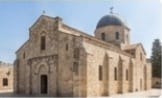
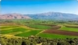
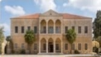
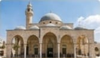
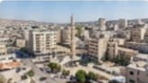
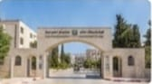
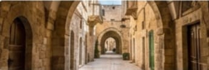
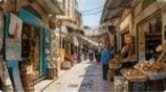
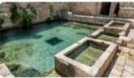
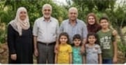

جنين.. مرج ابن عامر وعراقة التاريخ
"رحلة مصورة عبر تاريخ وثقافة ومعالم مدينة جنين، من كنيسة برقين إلى مرج ابن عامر الفسيح."

كنيسة برقين: معجزة الشفاء
رابع أقدم كنيسة في العالم، وموقع شفاء البرص العشرة.

مرج ابن عامر: سلة غذاء فلسطين
أكبر سهل داخلي في فلسطين، يُزرع بكافة المحاصيل.

قصور برقين القديمة: سكن الباشوات
بيوت سكنية تاريخية من الحجر، تعكس حياة الأثرياء.

مسجد فاطمة الخاتون: تراث عثماني
أبرز مساجد جنين القديمة، و يتميز ببناؤه التاريخي الفريد.
جنين: منارة العلم ونبض الأصالة
"نأخذكم في جولة بين أزقة جنين الضاربة في القدم، ومراكزها التعليمية الرائدة التي تصنع المستقبل، لنستكشف سوياً مدينةً تجمع بين الصمود التاريخي والحيوية الاقتصادية المستمرة."

المركز التجاري والنشاط الاقتصادي اليومي
القلب النابض للمدينة؛ حيث تمتزج الحيوية الاقتصادية بالنشاط الاجتماعي في شوارعها، لتعكس صمود أهلها وإرادتهم المستمرة في العمل والحياة

الجامعة العربية الأمريكية: منارة المعرفة
صرحٌ أكاديمي متميز يعد الأول من نوعه في فلسطين، يجمع بين الحداثة التعليمية والبحث العلمي، ليكون منارةً معرفية تخرج أجيالاً تساهم في بناء الوطن.

البلدة القديمة: أزقة تاريخية
رحلة عبر الزمن في أزقة حجرية تحكي قصص الحضارات المتعاقبة، حيث تحتفظ كل زاوية فيها برائحة التاريخ الفلسطيني الأصيل وذكريات الأجداد

حركة تجارية ناشطة ومنتجات محلية متنوعة.
أحد أهم المراكز التجارية في شمال فلسطين؛ يشتهر بتنوع معروضاته من المنتجات الزراعية والحرفية، ويمثل ملتقىً حيوياً يجمع بين أصالة البيع التقليدي وحداثة التجارة
جنين القسام: نبض المجتمع وروح العطاء
"نغوص في جوهر مدينة جنين لنكتشف كرم أهلها الأصيل، ومعالمها الطبيعية التي تروي حكايات الصمود، وحركة أسواقها النابضة بالحياة التي لا تعرف الكلل."

عين نين: شريان الحياة
أحد المصادر المائية الطبيعية والتاريخية الهامة في المدينة، مثّلت عبر العصور مركزاً للحياة والزراعة، ولا تزال شاهداً طبيعياً على وفرة خيرات أرض جنين.

أهل جنين: شموخ وعطاء
يُعرف أهل جنين بالشهامة والكرم المتأصل، وهم حراس الأرض الذين يجمعون بين البساطة والإرادة الصلبة، متمسكين بتراثهم وجذورهم الضاربة في عمق التاريخ.

روح التضامن: نسيجٌ واحد
تتجلى في جنين أسمى صور التكافل الاجتماعي والوحدة، حيث يقف الأهالي واللاجئون في مخيمها الصامد يداً واحدة، معبرين عن نموذج فريد في التضحية والترابط الوطني.

سوق جنين المركزي: حيوية دائمة
يعد المركز التجاري الأهم في الشمال، حيث يشتهر ببيع المحاصيل الزراعية الطازجة من مرج ابن عامر، ويمتاز بحركته النشطة وتوافد الزوار إليه من كل القرى المجاورة.